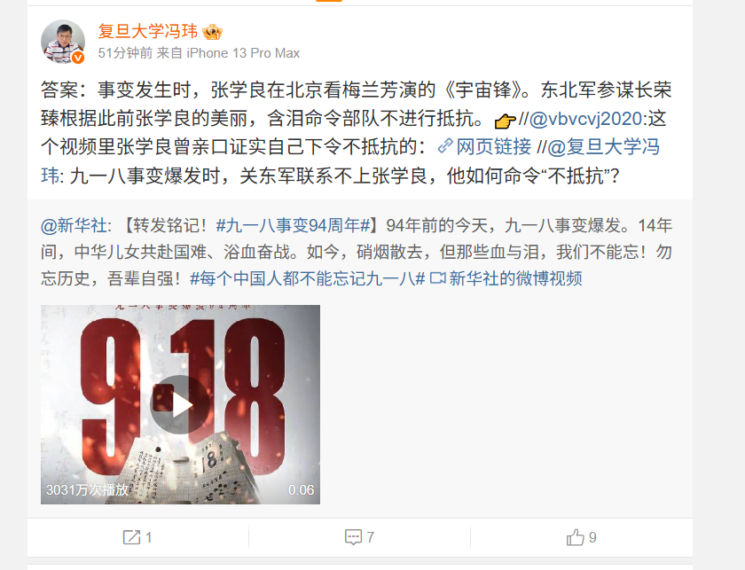
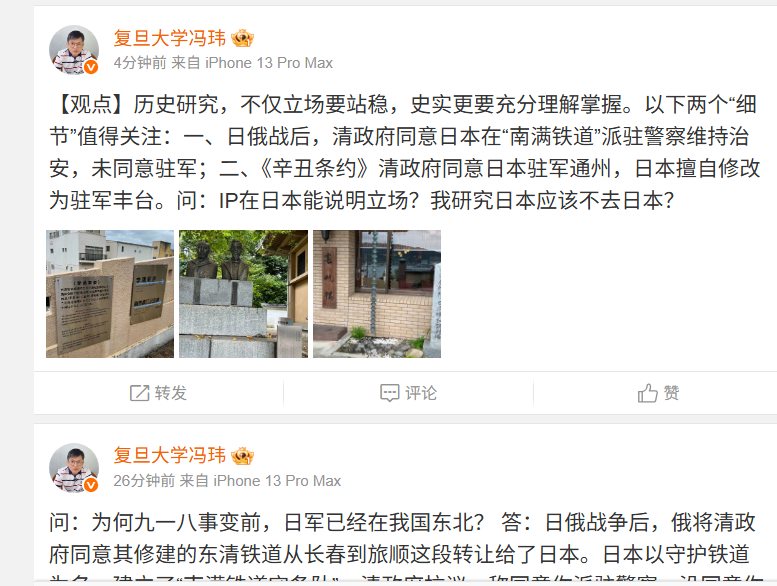

RT @whyyoutouzhele: 9月19日，复旦大学冯玮教授公开炮轰新华社，抛出九一八事变四大谜团：1.九一八事变爆发时，关东军爆发时联系不上张学良，他如何下达“不抵抗”令？2.石原莞尔速占东北，为何却“吞万斛之泪、待机推行满蒙论”？3.真相为何拖至1956年方揭？4.…



9月19日，复旦大学冯玮教授公开炮轰新华社，抛出九一八事变四大谜团：1.九一八事变爆发时，关东军爆发时联系不上张学良，他如何下达“不抵抗”令？2.石原莞尔速占东北，为何却“吞万斛之泪、待机推行满蒙论”？3.真相为何拖至1956年方揭？4.为何事变前日军已经存在于我国东北？……“勿忘国耻”是否首先应该 https://t.co/zhXTd1Q4oK